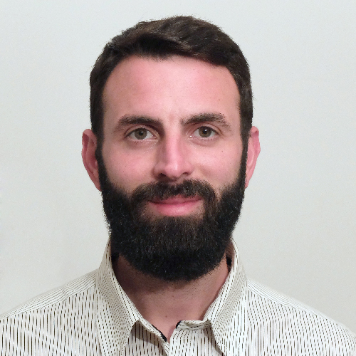

linkedin
linkedin
Soy Francisco José Martínez Henares y actualmente estoy cursando un FP de Grado Superior de Desarrollo de Aplicaciones Web (DAW). Siempre me ha atraído el diseño y me gustan los desafíos técnicos así que me he decidido a formarme en esta rama, donde creo que puedo hacer un buen trabajo.
Durante mi vida laboral hasta la fecha (básicamente servicios o comercial en tienda) he trabajado en diferentes ambientes con grupos grandes y pequeños. También he sido responsable en un comercio liderando un pequeño grupo. Considero que el trato personal siempre ha sido uno de mis fuertes.
Tengo muchas ganas de adentrarme en este sector y encontrar un equipo de trabajo donde pueda evolucionar como desarrollador. De momento lo que más me atrae es el frontend, pero como desarrollador junior no me importa formarme en cualquier lenguaje, framework, SO, etc.
